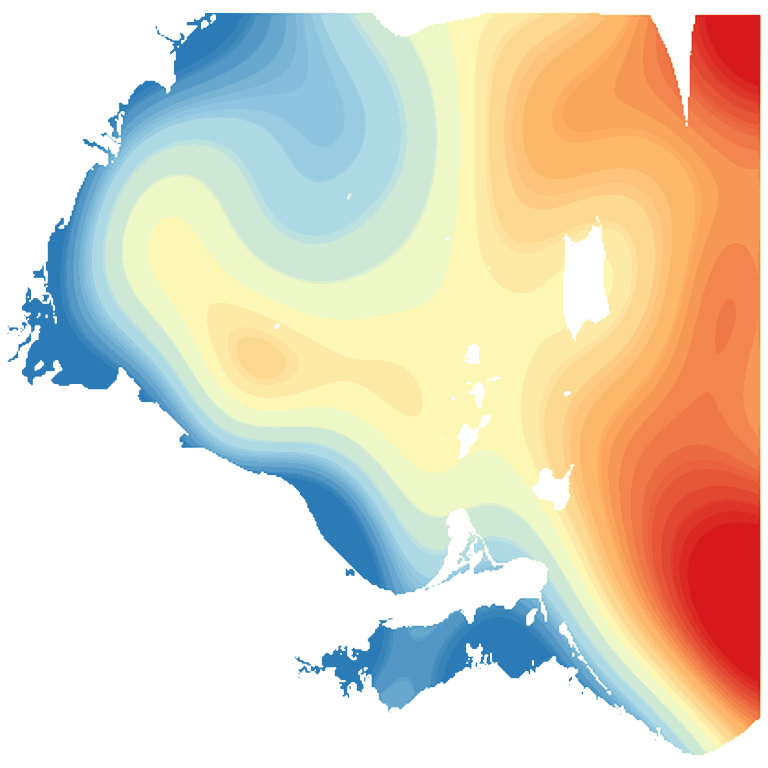

LakeScope › OH
Lake Erie (western basin) today
Updated 2026-11-26 - Atlas Labs
Clear water, 50°F water, level rising, near normal, windy Thursday (21 mph NE).
Water level
572.35 ft
NOAA water-level station Toledo - 2026-11-26
7-day trend: rising (+1.25 ft). Compared with normal for this date: +0.5 ft (same weeks, 2016-2025).
Water clarity and algae
Clear water Last clear view: a few days ago.
Surface temperature
50°F
seen from space on 2026-11-23

Ice
Open - 0% ice cover
Estimate from weather and satellite, not a measurement. Check the ice yourself before going on it.
Weather, next 3 days
| Day | Sky | High / low | Wind | Rain |
|---|---|---|---|---|
| Thursday | Rain | 46 / 38°F | 21 mph NE | 100% |
| Friday | Light Rain | 42 / 35°F | 13 mph NW | 87% |
| Saturday | Partly Sunny | 46 / 37°F | 12 mph SW | 3% |
Sunrise 07:34 - sunset 17:03 - Full moon. National Weather Service.
Get the LakeScope app: alerts and the 3-D view of Lake Erie (western basin)